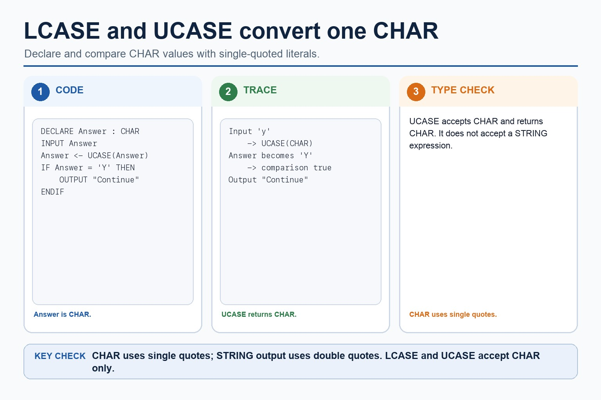
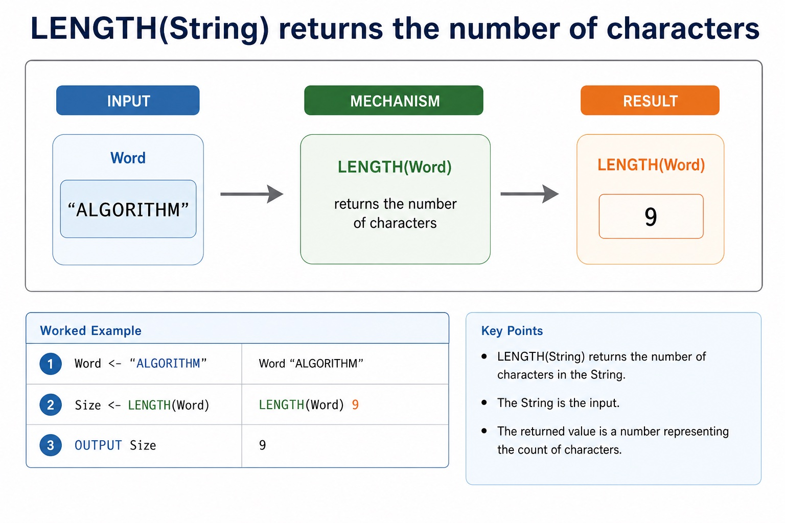

Cambridge AS9618 | Paper 2 | Section 11: Programming
Clear and efficient Cambridge pseudocode
Flexible-depth lesson
S11.09 | Learn from the diagrams, test the method, then choose the practice you need.
Choose a Quick, Full or Deep route
Quick route
Use the diagnostic, learning objectives, first worked example and foundation question. Stop once the learner can explain the central distinction accurately.
Full route
Use every knowledge-point material set, the worked method, the terminology check and all questions.
Deep route
Add the prerequisite refresher, ask learners to connect the concept checklist, discuss the labelled extension and complete a transfer question without a model answer.
Part 1 | optional depth
Prerequisite knowledge and quick diagnostic
Recall the main conclusion from Lesson 078: Functions, interfaces and return values.
Give one accurate definition or method step before continuing. If it is missing, revisit only that prerequisite.
Part 2 | knowledge-point material sets
Learn each point through visuals
Follow the map, the three-part explanation and the concrete cue. Open precise wording only after the idea is clear.
Open the concept checklist and choose what to teach
clear
efficient
Cambridge
pseudocode
01
S11.09 · concept
Clear · Efficient · Cambridge · Pseudocode
Concept map
clearefficientCambridgepseudocode
See how it works
MeaningThe Cambridge pseudocode remains clear because initialisation, loop bounds, selection and outputs are explicit
MechanismClear Cambridge pseudocode uses meaningful identifiers, consistent indentation, complete Cambridge constructs and a traceable control path
ConsequenceEfficient pseudocode avoids unnecessary repeated work while preserving correctness
S11.09 diagrams
1 / 4
01
Concrete example · 1 of 4
Java methods can model modularity, but Cambridge pseudocode remains the exam format
Open text transcript
Java support only
Cambridge-style pseudocode
FUNCTION IsValidMark(Mark : INTEGER) RETURNS BOOLEAN
RETURN Mark = 0 AND Mark <= 100
ENDFUNCTION
Java support example only
static boolean isValidMark(int mark) {
return mark = 0 && mark <= 100;
02
Diagram · 2 of 4
Java can support practice; the review answer should be Cambridge pseudocode
Open text transcript
Java may support practice but the review answer uses Cambridge pseudocode.
Increment PassCount only when the current mark is at least 50.
Close the pseudocode selection with ENDIF before NEXT Index.
Keep Java and pseudocode indexing conventions explicit.
03
Process · 3 of 4
A string is a sequence of characters
Open text transcript
Cambridge-style assignment
Name <- "Ada"
Message <- "Hello, " & Name
OUTPUT Message
Reasoning
"Ada" is a string of three characters. & is used here for concatenation.
If a question uses a different concatenation operator, follow the question. The mark is for clear string construction.
04
Concrete example · 4 of 4
Java I/O syntax is not Cambridge pseudocode
Open text transcript
Java support only
Cambridge-style pseudocode
OUTPUT "Enter mark"
INPUT Mark
OUTPUT "Mark: " & Mark
Java support example only
Scanner input = new Scanner(System.in);
System.out.print("Enter mark: ");
Open precise syllabus wording
Write clear and efficient Cambridge pseudocode.
Write efficient pseudocode.
Supporting diagram library
1 / 6
01
Diagram · 1 of 6
LCASE and UCASE convert one CHAR

Open text transcript
Declare Answer as CHAR, input one character and normalise it with UCASE before comparison.
UCASE(Answer) returns CHAR, so compare the result with the CHAR literal 'Y'.
Close the selection with ENDIF.
LCASE and UCASE accept CHAR, not STRING; case conversion does not remove spaces or correct spelling.
02
Diagram · 2 of 6
Concatenation joins STRING values
Open text transcript
Concatenation joins STRING values with the & operator.
FirstName is "Lin" and YearText is "2029"; Username <- FirstName & YearText returns "Lin2029".
Do not pass the STRING FirstName to LCASE; that function accepts CHAR.
03
Diagram · 3 of 6
MID and Java substring use different positions
Open text transcript
Cambridge guide example: MID(Name, 1, 3) returns the first three characters as a STRING.
Java support example: name.substring(0, 3) uses start index 0 inclusive and end index 3 exclusive.
LEFT is not listed in the Cambridge pseudocode guide; a question may use it only when the signature and position convention are supplied.
Do not add UCASE around a STRING expression because UCASE accepts CHAR.
04
Diagram · 4 of 6
Test a built-in function
Open text transcript
Interactive string lab
Use a short string and compare the returned value. For MID , positions start at 1.
Function
Choose a function and run it.
05
Diagram · 5 of 6
LENGTH(String) returns the number of characters

Open text transcript
Word <- "ALGORITHM"
Size <- LENGTH(Word)
OUTPUT Size
Word "ALGORITHM"
LENGTH(Word) 9
06
Diagram · 6 of 6
Exam traces must follow the position convention stated or implied
Open text transcript
Positions and indexing
Cambridge-style trace
Word <- "DATA"
Part <- MID(Word, 2, 2)
OUTPUT Part
Using 1-based positions, the output is "AT" .
Common error
Do not import Java's zero-based indexing into a pseudocode trace unless the question explicitly tells you to.
Apply the idea
Worked method
01Count passes and total in one traversal
02Combine two traversals
03Set Total and PassCount to 0 before one FOR loop through Marks[1:30].
04Add each mark to Total and increment PassCount only when the mark is at least 50.
05Output both values after NEXT Index.
06This preserves clear control flow while avoiding a second full traversal.
Open precise terminology and exam facts
Write efficient pseudocode.
Efficient pseudocode avoids unnecessary repeated work and selects a structure suited to the data and stopping rule. For example, total and count can be updated during one traversal instead of scanning the same array twice when both results are needed.
Efficiency does not justify incorrect bounds, hidden assumptions or compressed code that cannot be traced. A strong answer remains clear: initialise once, access only valid data, avoid redundant calculations and use meaningful identifiers and coherent constructs.
At AS Level, justify an improvement from the actual algorithm, such as fewer repeated passes or stopping a search once the target is found. Do not claim that shorter text alone proves a more efficient algorithm.
Clear Cambridge pseudocode uses meaningful identifiers, consistent indentation, complete Cambridge constructs and a traceable control path. Efficient pseudocode avoids unnecessary repeated work while preserving correctness.
Beyond syllabus / 延伸知识（不要求背诵）
consistent style, modularity and automated tests reduce maintenance errors in larger programs.
Part 3 | select by learner need
Practice by question type
writewritefoundation8 marks
Question 1. Write an algorithm that first totals Marks[1:30] and then makes a second pass to count passes, using one clear traversal. Explain the efficiency improvement. Write two full traversals as one clear and efficient Cambridge pseudocode traversal and justify the change.
Show answer and marking guidance
Answer: initialises Total and PassCount once before the loop; uses one loop over valid indexes 1 to 30; updates Total and conditionally updates PassCount inside that loop; outputs both results after the loop; explains that the rewrite removes a redundant second traversal without changing the result; clear Cambridge pseudocode; one correct traversal; avoids repeated work; valid efficiency justification
Marking guidance: Do not award an efficiency claim based only on fewer written lines; the revised pseudocode must perform less repeated work and remain correct. Do not credit an efficiency claim based only on line count.
Common error: For the command word write, perform that exact action; do not replace it with an unrelated fact.
explainexplainapplication2 marks
Question 2. Why is one combined traversal more efficient than two separate full traversals here?
Show answer and marking guidance
Answer: The same 30 elements are read once while both required results are updated, avoiding a redundant second pass.
Marking guidance: Award one mark for each distinct, technically accurate point or method step.
Common error: Do not repeat the same point in different words; each mark needs a separate idea or method step.
applyrecalltransfer2 marks
Question 3. Does shorter code always mean more efficient code?
Show answer and marking guidance
Answer: No; the amount of work and correctness matter.
Marking guidance: Award one mark for each distinct, technically accurate point or method step.
Common error: Do not copy the worked example unchanged; transfer the method and check it against the new context.
Part 4 | close when ready
Summary and exam reminders
Summary
Define clear and efficient cambridge pseudocode with the exact technical vocabulary expected by the syllabus.
Use the lesson method on a fresh context and show the intermediate decision, representation or calculation.
Match the shape of the answer to the command word and the available marks.
Check the final answer against the scenario instead of repeating a memorised sentence.
Common error to correct
Students often think working Java automatically means good pseudocode. Correction: Paper 2 rewards clear Cambridge-style algorithm expression.
Exam technique
Follow the command word: state gives a fact; explain links a cause to a consequence; compare covers both sides.
Match the number of independent points or method steps to the available marks.
For clear and efficient cambridge pseudocode, use the exact technical term before applying it to the scenario.